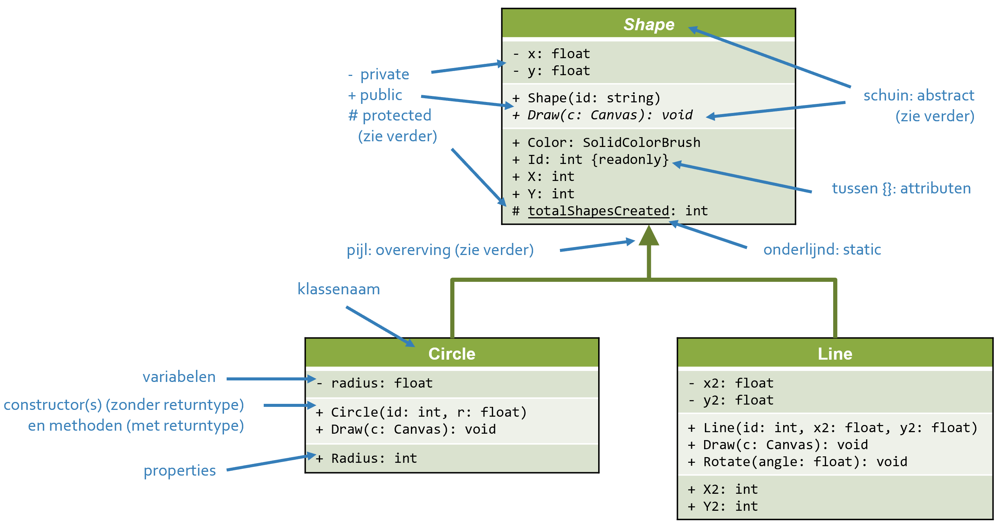
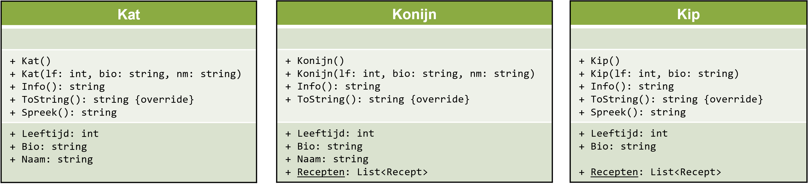
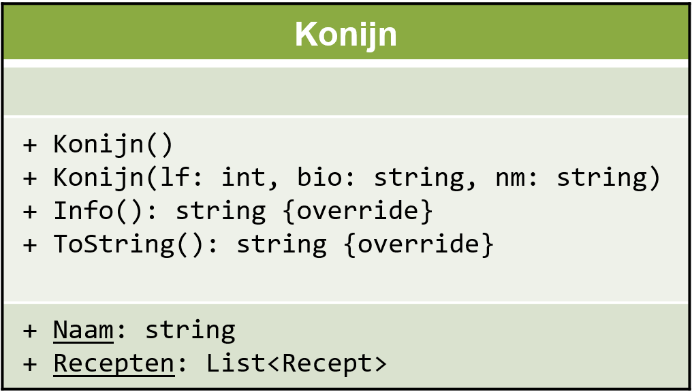
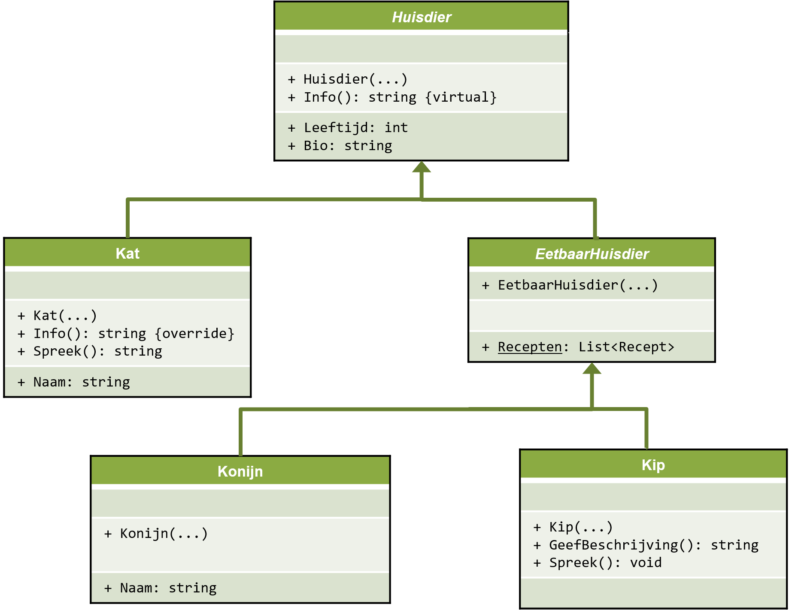

Youtube: overerving
Let op! Deze video is een al wat oudere versie van dit hoofdstuk, maar het komt nog voor het overgrote deel overeen en het zal je zeker helpen de principes te begrijpen.
UML klassediagrammen
Visuele voorstelling
Een UML klassediagram is een visuele voorstelling van de klassen in je programma (naam klasse, variabelen, methodes en properties):
- opmerking: voor dit vak moet je de UML klassen enkel kunnen lezen, niet zelf opstellen (dat komt aan bod in andere vakken)
Escape room voorbeeld
In een escape room spel zou je bijvoorbeeld drie klassen Room, Item en Door kunnen aanmaken:
Ook een statische klasse RandomMessageGenerator voor het genereren van random
berichten van een bepaald type Messagetype (enum) kan van pas komen:
DRY, refactoring
Voorbeeld: klassen Kat, Konijn en Kip
We vertrekken van een klasse Kat:
class Kat {
// properties
public string Naam { get; set; }
public int Leeftijd { get; set; }
public string Bio { get; set; } = "Er werd geen bio opgegeven.";
// constructors
public Kat() { }
public Kat(string nm, int lf, string bio) { Naam = nm; Leeftijd = lf; Bio = bio; }
// methodes
public string Info() {
return $@"Info:
- Leeftijd: {Leeftijd} jaar oud
- Bio: {Bio}
- Naam: {Naam}";
}
public string Spreek() {
return Leeftijd < 1 ? "miep" : "mauw";
}
public override string ToString() {
return $"Dier: kat, naam: {Naam}, leeftijd: {Leeftijd}";
}
}Vervolgens maken we een klasse Konijn (veronderstel een bestaande klasse Recept):
class Konijn {
// properties
public string Naam { get; set; }
public int Leeftijd { get; set; }
public string Bio { get; set; } = "Er werd geen bio opgegeven.";
public static List<Recept> Recepten = new List<Recept>();
// constructors
public Konijn() { }
public Konijn(string nm, int lf, string bio) { Naam = nm; Leeftijd = lf; Bio = bio; }
// methodes
public string Info() {
return $@"Info:
- Leeftijd: {Leeftijd} jaar oud
- Bio: {Bio}
- Naam: {Naam}";
}
public override string ToString() {
return $"Dier: konijn, naam: {Naam}, leeftijd: {Leeftijd}";
}
}En tenslotte ook een klasse Kip:
class Kip {
// properties
public int Leeftijd { get; set; }
public static List<Recept> Recepten = new List<Recept>();
public string Bio { get; set; } = "Er werd geen bio opgegeven.";
// constructors
public Kip() { }
public Kip(int lft, string bio) { Leeftijd = lft; Bio = bio; }
// methodes
public string Info() {
return $@"Info:
- Leeftijd: {Leeftijd} jaar oud
- Bio: {Bio}";
}
public string Spreek() {
return Leeftijd < 1 ? "piep" : "kot kot kedei";
}
public override string ToString() {
return $"Dier: kip, leeftijd: {Leeftijd}";
}
}Voorbeeldtoepassing
Ter illustratie een kleine toepassing:
class Program {
static void Main(string[] args) {
List<Kip> mijnKippen = new List<Kip>();
mijnKippen.Add(new Kip() { Leeftijd = 0 });
mijnKippen.Add(new Kip() { Leeftijd = 5 });
mijnKippen.Add(new Kip(4, "Deze haan is erg schuw en duidelijk niet veel mensenliefde gewend."));
List<Kat> mijnKatten = new List<Kat>();
mijnKatten.Add(new Kat() { Leeftijd = 12, Naam = "Minou" });
mijnKatten.Add(new Kat(1, "Ik heb groene ogen, daarom heet ik Pistache.", "Pistache"));
List<Konijn> mijnKonijnen = new List<Konijn>();
mijnKonijnen.Add(new Konijn() { Leeftijd = 7, Naam = "Flappie" });
mijnKonijnen.Add(new Konijn(2, "Hoi ik ben Caramel en ongeveer 3 jaar oud, zwervend op straat gevonden met extreem lange nagels.", "Caramel"));
// kippen
foreach (Kip kip in mijnKippen) {
Console.WriteLine(kip); // ToString() methode
Console.WriteLine(kip.Info());
Console.WriteLine($"De kip zegt: “{kip.Spreek()}”");
Console.WriteLine();
}
// katten
foreach (Kat kat in mijnKatten) {
Console.WriteLine(kat); // ToString() methode
Console.WriteLine(kat.Info());
Console.WriteLine($"{kat.Naam} zegt: “{kat.Spreek()}”");
Console.WriteLine();
}
// konijnen
foreach (Konijn konijn in mijnKonijnen) {
Console.WriteLine(konijn); // ToString() methode
Console.WriteLine(konijn.Info());
// geen Spreek(); konijnen spreken niet
Console.WriteLine();
}
Console.ReadKey();
}
}
Dier: kip, leeftijd: 0 Info: - Leeftijd: 0 jaar oud - Bio: Er werd geen bio opgegeven. De kip zegt: "piep" Dier: kip, leeftijd: 5 Info: - Leeftijd: 5 jaar oud - Bio: Er werd geen bio opgegeven. De kip zegt: "kot kot kedei" Dier: kip, leeftijd: 4 Info: - Leeftijd: 4 jaar oud - Bio: Deze haan is erg schuw en duidelijk niet veel mensenliefde gewend. De kip zegt: "kot kot kedei" Dier: kat, naam: Minou, leeftijd: 12 Info: - Leeftijd: 12 jaar oud - Bio: Er werd geen bio opgegeven. - Naam: Minou Minou zegt: "mauw" Dier: kat, naam: Pistache, leeftijd: 1 Info: - Leeftijd: 1 jaar oud - Bio: Ik heb groene ogen, daarom heet ik Pistache. - Naam: Pistache Pistache zegt: "mauw" Dier: konijn, naam: Flappie, leeftijd: 7 Info: - Leeftijd: 7 jaar oud - Bio: Er werd geen bio opgegeven. - Naam: Flappie Dier: konijn, naam: Caramel, leeftijd: 2 Info: - Leeftijd: 2 jaar oud - Bio: Hoi ik ben Caramel en ongeveer 3 jaar oud, zwervend op straat gevonden met extreem lange nagels. - Naam: Caramel
DRY principe: don't repeat yourself
Als we de drie klassen naast elkaar bekijken, zijn er nogal wat overeenkomsten:
Herhaling van code is altijd slecht en wijst altijd op een zwakke programma structuur:
- foutgevoeliger (vgl. databank redundantie)
- onoverzichtelijk
- moeilijker te onderhouden
DRY principe: Don’t Repeat Yourself. Er zijn verschillende manieren om herhaling op te lossen:
- een nieuwe methode schrijven
- een nieuwe klasse maken
- gebruik maken van overerving
- ...

Slechte oplossing: één enkele klasse
Een (slechte) oplossing om dubbele code te vermijden is alles in één klasse KipKaNijn samenpersen:
// extra enumeratie nodig!
enum DierType { Kat, Konijn, Kip }
class KipKaNijn {
// meer constructoren!
public KipKaNijn() { }
public KipKaNijn(DierType ds, int lf) {
Diersoort = ds;
Leeftijd = lf;
}
public KipKaNijn(DierType ds, int lf, string nm) : this(ds, lf) {
Naam = nm;
}
// dubbelzinnige properties!
public int Leeftijd { get; set; }
public int Bio { get; set; }
public string Naam { get; set; } // niet relevant voor kippen
public static List<Recept> Recepten { get; set; } = new List<Recept>(); // niet relevant voor katten
public DierType Diersoort { get; set; } // extra property nodig voor soort
// methodes worden complexer met veel switch-cases!
public string Info() {
string info = $@"Info:
- Leeftijd: {Leeftijd} jaar oud
- Bio: {Bio}";
if (Diersoort == DierType.Kat || Diersoort == DierType.Konijn) {
info += $@"
- Naam: {Naam}";
}
return info;
}
public string Spreek() {
switch (Diersoort) {
case DierType.Kip:
return Leeftijd < 1 ? "piep" : "kot kot kedei";
case DierType.Kat:
return Leeftijd < 1 ? "miep" : "mauw";
default:
return null; // or throw Exception
}
}
public override string ToString() {
switch (Diersoort) {
case DierType.Kip:
return $"Dier: kip, leeftijd: {Leeftijd}";
case DierType.Kat:
return $"Dier: kat, naam: {Naam}, leeftijd: {Leeftijd}";
case DierType.Konijn:
return $"Dier: konijn, naam: {Naam}, leeftijd: {Leeftijd}";
default:
return null; // or throw Exception
}
}
}Er duiken allerlei nieuwe problemen op:
- extra enumeratie(s) nodig
- meer constructoren nodig
- niet alle properties zijn altijd relevant voor elk subtype
- methodes worden complexer met b.v. extra
switch-case's - wat stelt
KipKaNijneigenlijk voor? het past niet bij onze denkwereld
Alles in aparte klassen is geen goed idee, alles in één klasse is geen goed idee...
Wat we nodig hebben is gemeenschappelijke code in superklassen, en aparte code in afgeleide subklassen. Dit principe heet overerving.
Overerving
Bekijken we nog eens de drie aparte klassen:
Superklasse Huisdier
We groeperen die gemeenschappelijke delen in een nieuwe superklasse Huisdier:
Implementatie van de superklasse Huisdier:
class Huisdier {
public int Leeftijd { get; set; }
public string Bio { get; set; } = "Er werd geen bio opgegeven.";
public Huisdier() { }
public Huisdier(int lf, string bio) { Leeftijd = lf; Bio = bio; }
public string Info() {
return $@"Info:
- Leeftijd: {Leeftijd} jaar oud
- Bio: {Bio}";
}
}- de basisklasse bevat alle gemeenschappelijke delen: leeftijd, bio, twee constructoren en een
Info()implementatie - we hebben ervoor gekozen geen
ToString()implementatie te voorzien omdat deze teveel verschilt - de methode
Info()isvirtualgemarkeerd om afgeleide klassen toe te laten dit te overschrijven
Overgeërfde klassen Kat:Huisdier, Kip:Huisdier en Konijn:Huisdier
De implementatie van de subklasse Kat, overgeërfd van Huisdier
class Kat : Huisdier {
public string Naam { get; set; }
public Kat() { }
public Kat(int lf, string bio, string nm) : base(lf, bio) { Naam = nm; }
public override string Info() {
return @$"{base.Info()}
- Naam: {Naam}";
}
public override string ToString() {
return $"Dier: kat, naam: {Naam}, leeftijd: {Leeftijd}";
}
public string Spreek() {
return Leeftijd < 1 ? "miep" : "mauw";
}
}
- de afgeleide klasse
Katbevat alles uit de basisklasseHuisdieraangevuld met naam, uitbreidingen van de twee constructoren, eenSpreek()en eenToString()methode - met
: base(lf, bio)wordt eerst de constructor uit de basisklasseHuisdieropgeroepen - met
overridegeef je aan dat de methodeInfo()die uit de basisklasseHuisdieroverschrijft - met
base.Info()wordt deInfo()methode de basisklasseHuisdieropgeroepen
De implementaties van de twee andere subklassen Kip en Konijn:
class Kip : Huisdier {
public static List<Recept> Recepten = new List<Recept>();
public Kip() { }
public Kip(int lf, string bio) : base(lf, bio) { }
public override string ToString() {
return $"Dier: kip, leeftijd: {Leeftijd}";
}
public string Spreek() {
return Leeftijd < 1 ? "piep" : "kot kot kedei";
}
}
class Konijn : Huisdier {
public string Naam { get; set; }
public static List<Recept> Recepten = new List<Recept>();
public Konijn() { }
public Konijn(int lf, string bio, string nm) : base(lf, bio) { Naam = nm; }
public override string Info() {
return @$"{base.Info()}
- Naam: {Naam}";
}
public override string ToString() {
return $"Dier: konijn, naam: {Naam}, leeftijd: {Leeftijd}";
}
}

We hebben nu een superklasse Huisdier met alle
gemeenschappelijke kenmerken, en drie overgeërfde klassen die
aanvullen/aanpassen waar nodig.
Abstract
Abstracte klassen
Je zou kunnen argumenteren dat een Huisdier op zichzelf geen betekenis heeft,
maar dat het enkel dient als basisklasse voor Kat, Kip of Konijn.
In dat geval kan je overwegen de klasse als abstract te markeren:
abstract class Huisdier {
...
}
Je moet het eerst overerven om te kunnen gebruiken:
Huisdier h = new Huisdier(); // fout: Huisdier kan niet rechstreeks gebruikt worden
Kat minnie = new Kat(); // ok; afgeleide klasse Kat kan wel gebruikt worden
Konijn flappie = new Konijn(); // ok; afgeleide klasse Konijn kan wel gebruikt worden
Abstracte members
Je kan ook abstracte members maken: je kan ze dan niet direct gebruiken, maar ze moeten overschreven worden in elke afgeleide klasse:
abstract class Huisdier {
...
public abstract string Info(); // geen implementatie want methode is abstract
}
In de afgeleide klassen markeer je het weer met override, b.v in Kip.cs:
class Kip : Huisdier {
...
public override string Info() {
return $@"Leeftijd: {Leeftijd}
{Bio}";
}
...
}
- merk op dat je nu
base.Info()niet meer kan gebruiken omdat basisklasseHuisdiergeen implementatie heeft
is en as
Het voorbeeldprogramma herschreven, de oorspronkelijke versie rechts en de versie met overerving links:
class Program {
static void Main(string[] args) {
List<Huisdier> mijnHuisdieren = new List<Huisdier>();
mijnHuisdieren.Add(new Kip() { Leeftijd = 0 });
mijnHuisdieren.Add(new Kip() { Leeftijd = 5 });
mijnHuisdieren.Add(new Kip(4, "Deze haan is erg schuw..."));
mijnHuisdieren.Add(new Kat() { Leeftijd = 12, Naam = "Minou" });
mijnHuisdieren.Add(new Kat(1, "Ik heb groene oge...", "Pistache" ));
mijnHuisdieren.Add(new Konijn() { Leeftijd = 7, Naam = "Flappie" });
mijnHuisdieren.Add(new Konijn(2, "Hoi ik ben Car...", "Caramel" ));
// huisdieren
foreach (Huisdier dier in mijnHuisdieren) {
Console.WriteLine(dier); // ToString() methode
Console.WriteLine(dier.Info());
if (dier is Kip) {
Kip kip = dier as Kip;
Console.WriteLine($"De kip zegt: “{kip.Spreek()}”");
}
if (dier is Kat) {
Kat kat = dier as Kat;
Console.WriteLine($"{kat.Naam} zegt: “{kat.Spreek()}”");
}
if (dier is Konijn) {
// doe niks; konijnen spreken niet
}
Console.WriteLine();
}
Console.ReadKey();
}
}
class Program {
static void Main(string[] args) {
List<Kip> mijnKippen = new List<Kip>();
mijnKippen.Add(new Kip() { Leeftijd = 0 });
mijnKippen.Add(new Kip() { Leeftijd = 5 });
mijnKippen.Add(new Kip(4, "Deze haan is erg schuw..."));
List<Kat> mijnKatten = new List<Kat>();
mijnKatten.Add(new Kat() { Leeftijd = 12, Naam = "Minou" });
mijnKatten.Add(new Kat(1, "Ik heb groene oge...", "Pistache"));
List<Konijn> mijnKonijnen = new List<Konijn>();
mijnKonijnen.Add(new Konijn() { Leeftijd = 7, Naam = "Flappie" });
mijnKonijnen.Add(new Konijn(2, "Hoi ik ben Car...", "Caramel"));
// kippen
foreach (Kip kip in mijnKippen) {
Console.WriteLine(kip); // ToString() methode
Console.WriteLine(kip.Info());
Console.WriteLine($"De kip zegt: “{kip.Spreek()}”");
Console.WriteLine();
}
// katten
foreach (Kat kat in mijnKatten) {
Console.WriteLine(kat); // ToString() methode
Console.WriteLine(kat.Info());
Console.WriteLine($"{kat.Naam} zegt: “{kat.Spreek()}”");
Console.WriteLine();
}
// konijnen
foreach (Konijn konijn in mijnKonijnen) {
Console.WriteLine(konijn); // ToString() methode
Console.WriteLine(konijn.Info());
// geen Spreek(); konijnen spreken niet
Console.WriteLine();
}
Console.ReadKey();
}
}
- de code is nu korter, leesbaarder en intuïtiever
- we hebben één lijst type
Huisdierin plaats van drie aparte lijsten - Het subtype van een object kun je controleren met
is, naar een subtype casten kan metas
Polymorfisme
Ter herinnering, er zijn drie implementaties van Info(): één algemene in de klasse
Huisdier en twee specifieke in de klasse Konijn en Kat.
Naar de buitenwereld toe is er echter slechts één methode Info(); de compiler zal
automatisch de juiste versie oproepen naargelang de situatie (in dit geval het subtype)
foreach (Huisdier dier in mijnHuisdieren) {
...
Console.WriteLine(dier.Info()); // één uitwendige methode, drie inwendige implementaties
...
}
- Dit doet denken aan bv. method overloading: ook daar kan dezelfde methode dankzij meerdere inwendige implementaties gebruikt worden in verschillende versies (in dit geval naargelang de gebruikte parameters)
- Dit concept waarbij eenzelfde uitwendige vorm toch intern verschillende implementaties kan hebben, heet in de programmeerwereld polymorfisme (letterlijk: “meerdere vormen”)
Klassen hiërarchie
Je kan overerving verder doordrijven en ook sub-subclasses maken:

De volledige boomstructuur noemt men de klassen hiërarchie.
Er zijn meerdere hiërarchieën te bedenken. Je kan b.v. een klasse HuisdierMetNaam maken enz... Alles hangt af van de complexiteit van de toepassing. In dit vak (tenzij anders vermeld) zal over het algemeen één overerving volstaan.
De mogelijkheden zijn eindeloos; het ontwerp van de klassen hiërarchie is één van de belangrijkste taken van software engineering (samen met keuzes over properties, methoden, static of non-static, enums…). Over het algemeen geldt: hoe groter het project, hoe complexer de structuur.
Welke keuzes je uiteindelijk maakt is kwestie van persoonlijke stijl en een kunst, maar over het algemeen geldt: te weinig structuur is niet goed, en teveel ook niet; het optimum ligt ergens “in het midden”. Aan jou om door ervaring je eigen stijl te ontwikkelen.
Pure klassen
Je zult misschien gemerkt hebben dat onze klassen Huisdier, Kip, Kat en Konijn puur zijn: nergens komt b.v. Console.WriteLine() voor. Dat betekent dat we onze klassen naadloos en onveranderd kunnen gebruiken in een heel andere omgeving, b.v. in een WPF toepassing:
public partial class MainWindow : Window {
public MainWindow() {
InitializeComponent();
// voorbeelden gebruik lege constructor met object initializer syntax
lbxDieren.Items.Add(new Kip() { Leeftijd = 0 });
lbxDieren.Items.Add(new Kip() { Leeftijd = 5 });
lbxDieren.Items.Add(new Kat() { Leeftijd = 12, Naam = "Minou" });
lbxDieren.Items.Add(new Konijn() { Leeftijd = 7, Naam = "Flappie" });
// voorbeelden gebruik niet-lege constructor
lbxDieren.Items.Add(new Kip(4, "Deze haan is erg schuw en duidelijk..."));
lbxDieren.Items.Add(new Kat(1, "Ik heb groene ogen, daarom...", "Pistache"));
lbxDieren.Items.Add(new Konijn(2, "Hoi ik ben Caramel en...", "Caramel"));
}
private void BtnTelDieren_Click(object sender, RoutedEventArgs e) {
int aantalKatten = 0;
int aantalKonijnen = 0;
int aantalKippen = 0;
foreach (Huisdier dier in lbxDieren.Items) {
if (dier is Kat) aantalKatten++;
else if (dier is Konijn) aantalKonijnen++;
else if (dier is Kip) aantalKippen++;
txtAantalDieren.Text = $"er zijn {aantalKatten} katten, {aantalKonijnen} konijnen en {aantalKippen} kippen";
}
}
private void LbxDieren_SelectionChanged(object sender, SelectionChangedEventArgs e) {
Huisdier dier = lbxDieren.SelectedItem as Huisdier;
if (dier == null) return;
txtDetails.Text = dier.Info();
if (dier is Kat) {
Kat kat = dier as Kat;
txtDetails.Text += $"{Environment.NewLine}{kat.Naam} zegt: {kat.Spreek()}!";
}
if (dier is Kip) {
Kip kip = dier as Kip;
txtDetails.Text += $"{Environment.NewLine}De kip zegt: {kip.Spreek()}!";
}
}
}De gebruikte klassen zijn exact dezelfde gebleven.